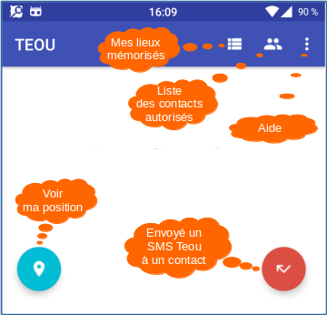

TEOU, une application qui retourne la localisation de l'appareil suite à
la réception d'un SMS "teou".
La réponse sera sous la forme d'un SMS "suila" avec le lien vers
la carte OpenStreetMap et la position de l'appareil.
Le système de localisation ne sera pas activée en permanence, la batterie
de l'appareil sera ainsi préservée.
De même, cette application fonctionne sans connexion à l’internet pour
fournir la position de l'appareil.
Une personne (qui n'a pas installé l'application TEOU sur son smartphone)
peut connaître votre position en envoyant simplement un SMS "teou"
à votre appareil.
Il recevra en retour le SMS "suila" suivi du lien de votre
position.
Il lui suffira de cliquer sur le lien pour voir la carte et votre position
dans le navigateur de son appareil connecté à l’internet.
L'application affiche automatiquement la carte OpenStreetMap suite à la réception du SMS "suila" (si l'appareil dispose d'une connexion à l’internet).
L'application dispose d'une interface
Pour bénéficier de toutes les fonctionnalités, il faudra autoriser
l'application à :
- Contacts
- Position (il faudra activer le GPS pour avoir une localisation précise)
- SMS
- Stockage
- Téléphone
Seuls les SMS émis par une personne déclarée dans la liste des contacts
autorisés seront acceptés par l'application.
Une personne inconnue ne pourra donc pas récupérer votre localisation.
Cette application est gratuite, libre et sans
publicité.
Les sources des programmes sont disponibles ici https://github.com/pbillerot/teou
C'est une garantie du respect de la confidentialité.
Accéder à la documentation complète
https://github.com/pbillerot/teou/blob/master/readme.md
